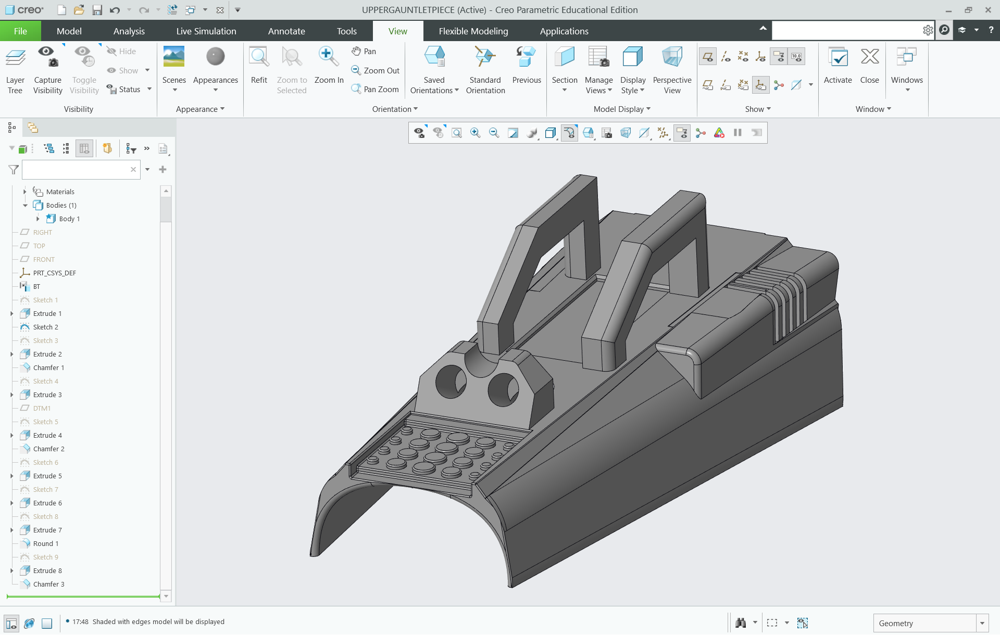
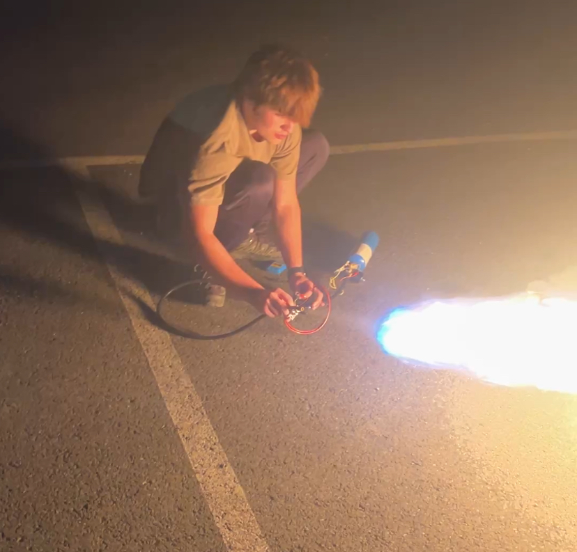

Mandalorian Wrist-Mounted Flame Thrower*
*Disclaimer
This is not actually a flamethrower, but is instead a stylized blow torch. This is powered by propane and air, and is made purely for the purpose of my own learning.
Inspiration
In Star Wars: The Mandalorian, Dinn Djarin, as well as Boba Fett from Empire Strikes Back and Return of the Jedi, and other Mandalorians like him posses advanced suits of armor with many integrated weapons systems, one of which is the wrist-mounted flamethrower. I have not worked on wearable pneumatics prior to this project, and wanted to work on some new skills in a cool way. Here's an example below:

Project Overview
Work in progress! Almost complete, I need to 3D print the vambrace. The system is tested and successful, utilizing a propane tank to produce a stream of flame (or a fireball) on command.
Design & Implementation
Pneumatic System
A propane cylinder supplies fuel, which then passes through an on-off valve, then a solenoid, then a hose, then an exit nozzle. The solenoid is powered by a 12V rechargable battery pack, and connected to a lever switch. The exiting flow is ignited by a separate ignition system, a grill lighter. PTFE tape was used on connections to prevent fluid leakage. The design is by no means elegant, but it is effective.
Vambrace
The vambrace will be 3D printed, and will align the hose and nozzle and the prongs of the ignition system, as well as integrate the controls, for easy, wearable flame-generation.
Glove
In the interest of not needing a new hand, the glove will be made of fireproof leather and designed for welding applications.
Safety Considerations
This is an inherently dangerous project, and several design decisions were made to mitigate risk.
- The system will require a switched solenoid and an on-off valve to both be on for fluid flow, preventing accidental release.
- The ignition system is separate from the fuel system, to ensure only deliberate creation of conditions for combustion.
- The flow will be angled slightly up as opposed to parallel to the wrist, removing any parts of my body from the flame's vicinity.
- Welding-grade fireproof gloves, pretty self-explanatory.
- Caution - limited testing in a location and manner that is prepared to promptly deal with any issues.
Vambrace Design in PTC Creo

Testing the Mechanism, With Components On Display

Outcome
The project is still underway, but the flame mechanism is complete. It is extremely satisfying creating controlled flame, and I am now much more aware of common practices and design ideas for pneumatic systems.
After talking to recruiters and looking at job postings, I found that PTC Creo is a desirable skill for asprining interns. Seeing this, I decided to incorporate it into this project, and I am now comfortable working with it for part design. I try to stay constantly adapting, and I am always glad to learn a new skill.
Although I am mainly focused on robotics and mechatronics, I enjoy(ed) relevant classes like thermodynamics and heat and mass transfer and wanted to apply some of their principles outside of the lecture hall. This is a fun project to work on with an undeniably cool result.